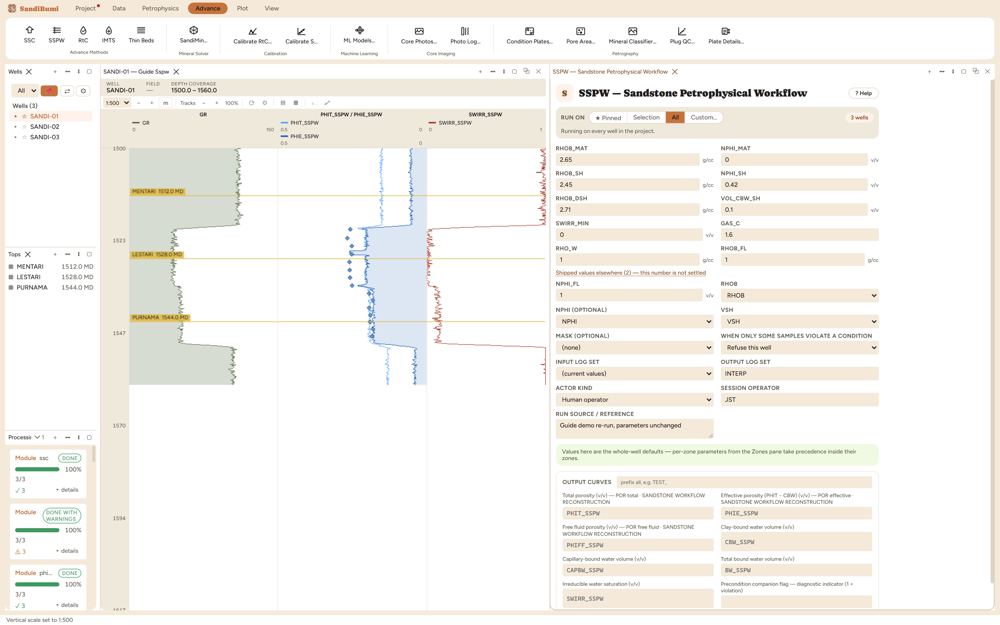
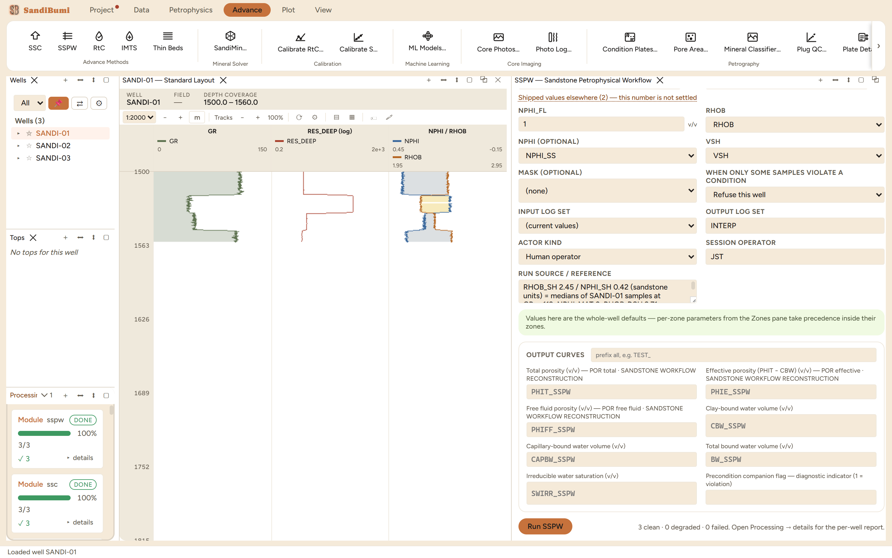

The Sandstone Petrophysical Workflow: a three-component model (quartz, shale, water) that computes total porosity from the density log with a shale-mixed matrix, then splits the shale's water into clay-bound and capillary-bound parts. It is the simpler sibling of the SSC chapter: where SSC resolves sand, silt and clay from the crossplot itself, SSPW takes the shale volume you already computed and applies the split to it. Reach for it on ordinary shaly sandstone where a VSH curve exists and the deliverable needs the free-fluid porosity and irreducible saturation that a plain density porosity does not give.
PHIT comes from the density log read against a matrix that mixes the clean grain density with the dry-shale grain density in proportion to VSH. The shale's own total porosity is fixed by its wet and dry densities, PHIT_SH = (RHOB_DSH − RHOB_SH)/(RHOB_DSH − RHOB_FL), and that porosity is then divided by declaration: VOL_CBW_SH of it is clay-bound, the remainder capillary-bound. Per sample:

3 clean. Whole-section medians: PHIT_SSPW 0.1702, PHIE_SSPW 0.1169, PHIFF_SSPW 0.0846, SWIRR_SSPW 0.4678, with the bound water split as CBW 0.0541 and CAPBW 0.0282. In the sands (GR < 60) PHIE and PHIFF nearly coincide, 0.1959 against 0.1938, and SWIRR drops to 0.0547: clean rock carries almost no bound water, which is the model behaving.
SELECT round(median(value), 4) FROM computed_curves WHERE curve_name = 'PHIFF_SSPW' AND NOT isnan(value)
The instructive measurement is what the split parameter does and does not move. VOL_CBW_SH raised from 0.10 to 0.15 drops the PHIE_SSPW median from 0.1169 to 0.0856 and collapses CAPBW to 0.0002, while SWIRR_SSPW stays exactly 0.4678. The parameter reallocates water between the clay-bound and capillary-bound bins without changing their sum, so the porosity that is defined against CBW alone moves and the saturation that is defined against the sum does not. That is the model's key convention, demonstrated in two numbers. Restored to 0.10, every value returns exactly.
